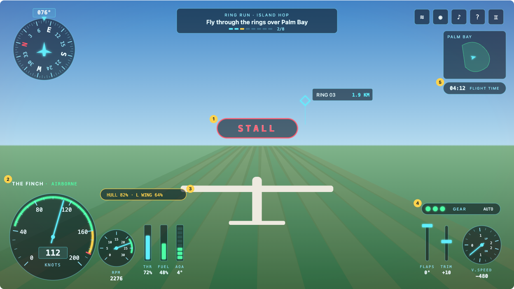
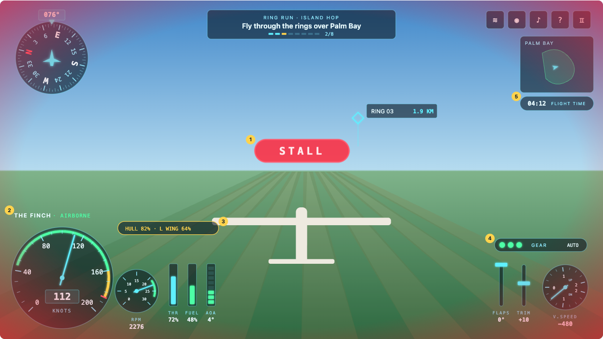
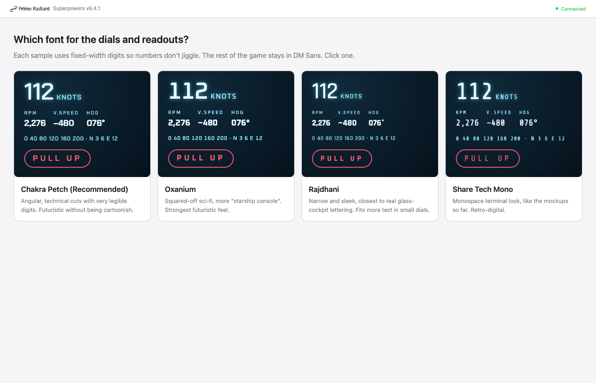

Replace the in-flight HUD (today: rounded teal/cream cards) with a futuristic, MSFS-inspired set of analog instruments: round dials and a compass rose, rendered as glowing "holo glass", plus a flashing warning system with a Bitchin' Betty–style voice.
Out of scope: main menu, hangar, pause card, modals (missions, controls, log, settings layout other than the two new rows), Replay Studio. Physics behaviour does not change; it only exposes a few more read-only values.
| Topic | Decision |
|---|---|
| Visual style | Holo Glass — smoked translucent glass dials, thin cyan neon lines with glow, green/amber/red bands, digital readouts inside dials. |
| Layout | Split clusters (MSFS layout) with the altimeter dial removed. Altitude is not shown anywhere on screen. |
| Font | Oxanium (Google Fonts, OFL) for dials and readouts, tabular numerals. Rest of the game stays DM Sans. |
| Rendering | React + SVG components. Needles, compass and rolling digits are driven by a HUD-local requestAnimationFrame spring loop writing transforms via refs (no React re-render per frame). Game loop untouched. |
| Animation extras | Boot-up sequence and live state changes. (Ambient sheen and damage glitch were declined.) |
| Phones | Scale + compact: tablets get the full layout scaled; portrait phones <540px get a reduced set. |
| Warnings | Eight voice callouts (fuel low and bingo fuel are separate) with matching banners; banner strobes at 3 Hz (photosensitivity ceiling). |
| Voice | Original voice generated once with OpenAI TTS, radio-filtered with ffmpeg, shipped as static clips. No real Betty recordings (owned by Boeing); no web clips (incomplete set, mixed voices, unclear rights). |

| Area | Contents |
|---|---|
| Top-left | Compass rose with heading readout box (e.g. 076°). Replaces the heading pill. |
| Top-centre | Objective strip: mission label, objective text, ring progress segments, 2/8. Replaces the objective card. |
| Top-right | Existing buttons (wind, camera, sound, help, pause) restyled as glass squares. Minimap below, clock pill below the minimap. |
| Bottom-left cluster | Aircraft + status line above. Airspeed dial (large) · engine dial (small) · THR bar (draggable) · FUEL bar · AOA segmented bar. Damage pill appears above the bars when damaged. |
| Bottom-right cluster | Gear lights pill above (jets only). FLAPS slot · TRIM slot · V.SPEED dial (small). |
| Centre | Warning banner above the aircraft; target marker (diamond + label + distance) restyled; hints/toasts keep their positions, restyled. |
Removed: the telemetry card, the "expand instruments" toggle and climb-rate readout (V.SPEED dial replaces it), the throttle range slider (THR bar replaces it), the altitude readouts.
| Instrument | Spec |
|---|---|
| Airspeed | 270° sweep from 0 to a per-aircraft max. Green band: stall speed → speed-protection onset (Mach limit − 0.035). Amber: onset → Mach limit. Red line at the Mach limit. Knots readout + "KNOTS" label. Dial max (sea-level Mach → knots, rounded up): Finch 180 kn (limit M0.25 ≈ 165 kn), Aurelia 450 kn (M0.6 ≈ 397 kn), Peregrine 500 kn and Stormbird 500 kn (M0.7 ≈ 463 kn). |
| Engine | Finch (propeller): RPM, 0–3000 dial; the propeller model runs 800 (idle) – 2500 (full throttle), so green band 2000–2500 and red line at 2500; readout e.g. 2,276. Jets: thrust %, 0–100, from enginePower, label "THRUST". |
| THR bar | Throttle 0–100 %. Pointer-drag sets physics.throttle (same as today's slider). Keyboard throttle unchanged. |
| FUEL bar | Remaining fuel ÷ full usable load. Turns amber ≤20 %, red ≤10 %. |
| AOA bar | 8 segments, 0 → stall AOA. Top segments amber; pulses when ≥85 % of stall AOA. Readout in degrees. |
| FLAPS / TRIM | Vertical slots with a glowing marker. Flaps hidden on Finch (fixed). Trim hidden when beginner assist is on (as today). |
| V.SPEED | ±2000 ft/min, 0 at 9 o'clock, climb up. Readout uses existing climbReadout. |
| Compass rose | Ring rotates with heading; 5° minor, 10° mid, 30° major ticks; N in red; fixed aircraft symbol and lubber triangle. Uses an unwrapped heading so 359°→0° takes the short way. |
| Element | Behaviour |
|---|---|
| Aircraft + status | "THE FINCH · AIRBORNE / ON RUNWAY"; STALL handled by the warning banner. |
| Damage pill | Shown when health <97: "HULL 82% · L WING 64%" (parts with damage >0.1). |
| Gear lights | Jets only. Three lights: green = down, amber blinking = moving, dark = up. Right side shows AUTO / MAN. |
| Speed-limit / flags | Become warnings (section 6), not chips. |
| Clock | Flight time, or "REMAINING" countdown in race missions. |
backdrop-filter: blur behind each dial, inner radial gradient, bevelled rim with a faint top highlight, inner shadow. Tick weights: major / minor / sub-minor.drop-shadow; tuned so the scene stays readable.FlightHud; pauses when the game is paused or the tab is hidden.prefers-reduced-motion, springs snap, no boot-up, no strobe (warnings are solid red).
Highest-priority active warning only. Strobes red fill / dark with a 0.35 s period (≈2.9 Hz, hard steps), text inverts, banner shakes, screen edges pulse red in sync (edge layer sits behind the instruments). 3 Hz is the WCAG general-flash ceiling; do not exceed it.
| # | Clip / banner | Condition | Repeat |
|---|---|---|---|
| 1 | "Pull up, pull up" / PULL UP | Airborne, AGL < 500 ft, and AGL ÷ sink rate < 6 s | every 2 s |
| 2 | "Stall, stall" / STALL | snapshot.stall | every 2 s |
| 3 | "Overspeed" / OVERSPEED | snapshot.speedProtection | every 3 s |
| 4 | "Landing gear" / LANDING GEAR | Jets, gear <0.5, AGL < 500 ft, descending, speed < 1.2 × approach knots | every 3 s |
| 5 | "Bank angle" / BANK ANGLE | Airborne, |roll| > 60° | every 3 s |
| 6 | "Bingo fuel" / BINGO FUEL | Fuel ≤ 10 % | once; re-arms above 12 % |
| 7 | "Warning, damage" / DAMAGE | Health crosses below 70 | once per new drop |
| 8 | "Fuel low" / FUEL LOW | 10 % < fuel ≤ 20 % | once; re-arms above 22 % |
localStorage).scripts/generate-betty.ts — calls OpenAI TTS once per line (calm, flat, clipped female voice), then ffmpeg: band-pass 300–3400 Hz, compression, light saturation, short tail trim.public/audio/betty/*.mp3 (8 voice clips + chime, target <150 KB total), committed. The game never calls OpenAI at runtime.OPENAI_API_KEY only when regenerating.Snapshot in src/game.ts)One new field, instruments: InstrumentData, built by a pure helper instrumentData(physics, propellerRpm) in src/hud/instrument-data.ts:
| Field | Source |
|---|---|
engine: { kind: "propeller"; rpm: number } | { kind: "jet"; percent: number } | Finch: propeller motion RPM. Jets: physics.enginePower × 100. |
fuelFraction: number | physics.fuelKg ÷ the design's fuel mass budget, clamped 0–1. |
aoaDegrees: number, stallAoaDegrees: number | Wing-referenced alpha (flow alpha + incidence, as the stall model uses) and the current positive stall alpha, in degrees. Before the first physics step: 0 and 15. |
Time to impact is derived inside the warning logic from the existing agl and verticalSpeed fields; no snapshot field is needed. Per-aircraft airspeed band limits come from flightProfiles (stall speed) and islandEnvelope (Mach limit), computed in the HUD.
| File | Responsibility |
|---|---|
src/hud/geometry.ts | Pure maths: polar points, arc paths, value→angle, heading unwrap, airspeed band computation. |
src/hud/spring.ts | Pure spring step function + a tiny rAF driver that animates registered refs. |
src/hud/Dial.tsx | Generic dial: range, sweep, ticks, bands, needle, readout, label. Used by airspeed, engine, V.SPEED. |
src/hud/CompassRose.tsx | Rotating compass. |
src/hud/BarGauge.tsx, SlotGauge.tsx | THR (draggable) / FUEL / AOA bars; FLAPS / TRIM slots. |
src/hud/RollingDigits.tsx | Odometer readout. |
src/hud/warnings.ts | Pure: snapshot + aircraft → ordered list of active warnings (with hysteresis state). |
src/hud/WarningBanner.tsx | Banner + red edge layer. |
src/betty.ts | Loads clips into the existing FlightAudio AudioContext; queue, priority, repeat timing, chime. |
src/hud/FlightHud.tsx | Layout, boot-up, compact mode; replaces the HUD markup in App.tsx (lines ~761–1000). |
src/hud/hud.css | Holo Glass tokens and styles; Oxanium import. |
pointer: coarse): touch stick and brake move above the clusters so they never overlap a dial.bun test: geometry (value→angle, arcs, heading unwrap across 0/360), airspeed bands per aircraft, spring convergence, warning conditions/priority/hysteresis, readout formatting.bunx tsc -b type check (tsconfig has noEmit).Notes
codex/private-wind-tunnel has ~66 uncommitted changes in other areas; implementation should happen on its own branch/worktree.